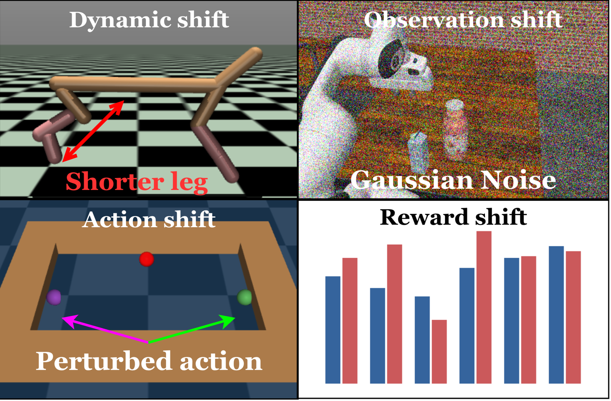
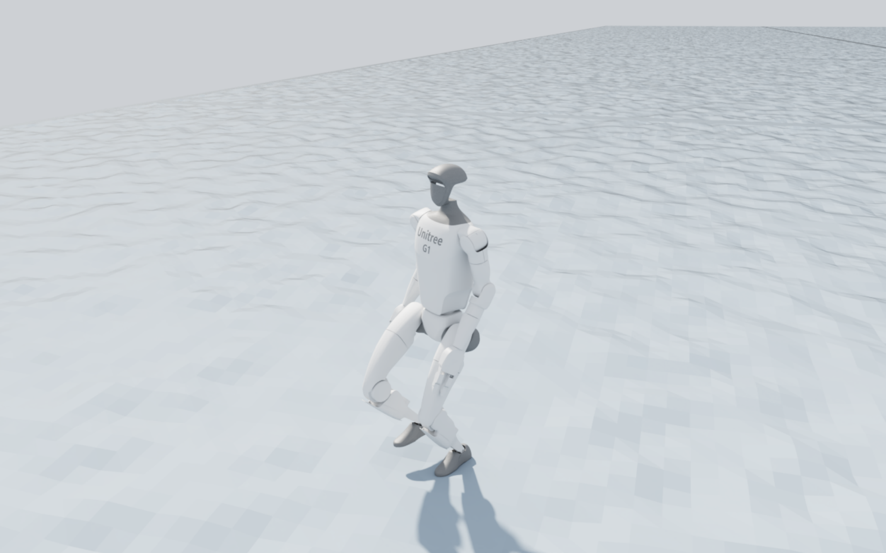
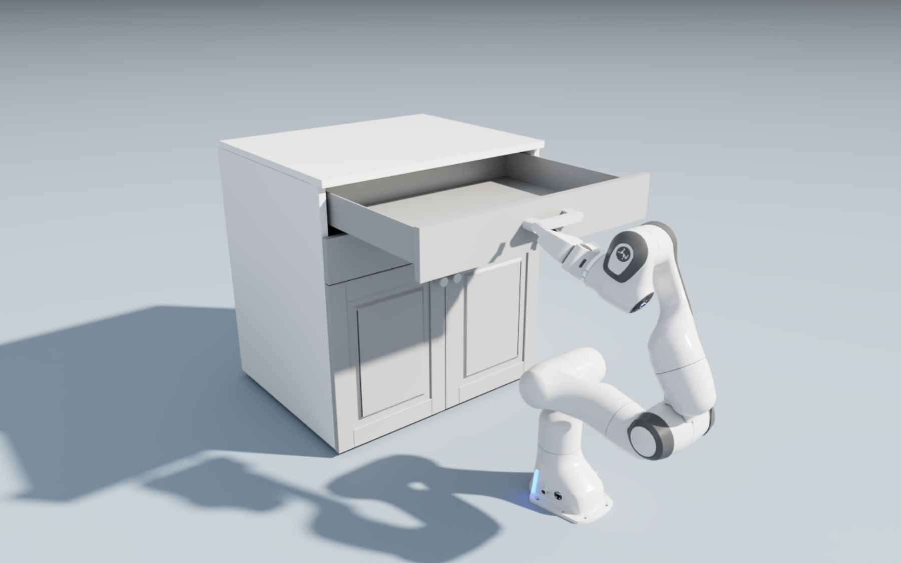

Overview¶
RobustRLlib is a library and benchmark for robust reinforcement learning that takes the algorithm as its unit of comparison. It holds 16 robust and robust safe methods and 6 standard algorithms behind one interface, a toolbox that declares deployment shifts, and one evaluation protocol that is applied to all of them.
Why an algorithm-centric library?¶
Robust RL has produced many mechanisms, but each is developed, trained and reported inside its own setting. Two barriers follow.
- Algorithms are not reusable. Methods are spread over separate implementations and training pipelines. There is no single interface through which a broad collection of robust methods can be tried on a new problem.
- The capability boundary is unclear. Methods are reported under different tasks, budgets and shift definitions, sometimes under the very shift their mechanism targets.
Algorithm groups¶
The library has four groups. Robust methods are split further by where robustness enters.
- Standard algorithms. The base learners that the robust methods are built on, and the reference for every comparison.
- Robust online algorithms. Learner-centric methods train against an adversary or on counterfactual replay, and environment-centric methods collect their rollouts in a perturbed environment.
- Robust offline algorithms. Learner-centric methods change the backup or the regulariser, data-centric methods reshape the training distribution, and generative methods train on futures sampled from a learned model.
- Robust safe algorithms. Methods that add a cost constraint and make it hold under shifted dynamics.
Library features¶
- One interface for 22 algorithms. Every method is launched from an experiment file and keeps its native training recipe and budget.
- Attribution built in. Every method records the mechanism it adds, the shift it claims to address and the base algorithm that realises it.
- Six shift sources and five modes. Shifts are declared as data and stacked in any order. See Shift Sources and Modes.
- One evaluation protocol. The frozen last checkpoint of every method is evaluated on the same grid. See Evaluation Protocol.
- Extensible. A new algorithm implements four methods, and a new simulator backend implements one adapter.
Comparison with related benchmarks¶
| Benchmark | Robust algorithms | MDP shifts | Latency | Semantic | Compound | Task expansion |
|---|---|---|---|---|---|---|
| RLlib | 0 | 0/4 | ✗ | ✗ | ✗ | ✓ |
| RRLS | 4 | 2/4 | ✗ | ✗ | ◐ | ✓ |
| ODRL | 0 | 1/4 | ✗ | ✗ | ✗ | ✗ |
| Robust-Gymnasium | 4 | 4/4 | ✗ | ✓ | ✓ | ✓ |
| RWRL Suite | 0 | 3/4 | ✓ | ✗ | ✓ | ◐ |
| RoAd-RL | 0 | 1/4 | ✗ | ✗ | ✗ | ✓ |
| RobustRLlib | 16 | 4/4 | ✓ | ✓ | ✓ | ✓ |
Robust algorithms counts robust or robust safe methods evaluated by each benchmark, without standard algorithms. ✓ is explicit, evaluated support; ◐ is partial support; ✗ is absent or not demonstrated. MDP shifts counts, out of four, the components on which shift is evaluated: observations, actions, transitions, and reward or cost.
Supported algorithms¶
| Group | Methods |
|---|---|
| Standard | IQL, TD3+BC, MOPO, SynthER, PPO, SAC |
| Robust online | ATLA, ATLA-SA, RSC, RARL, DR |
| Robust offline | RFQI, RORL, ATLA-IQL, RSC-IQL, RAMBO, ROMB, FWM, PLR-PVL |
| Robust safe | RAMU, SPiDR |
Demonstrations¶
Shift sources¶

A shift enters at an identifiable point of the interaction loop.
Robotics tasks¶


Unitree G1 locomotion and Franka drawer manipulation in Isaac Lab.
To install the library and run a first method, continue with Quick Start.